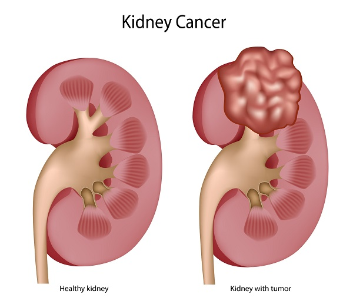
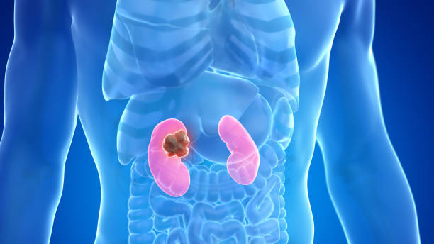

Kidney Cancer
Kidney Cancer
Kidney cancer, also known as renal cancer, begins when cells in the kidney start to grow out of control. The kidneys are a pair of bean-shaped organs, each about the size of a fist, located behind your abdominal organs and on either side of your spine. Their main job is to filter waste products from the blood and produce urine.
Types of Kidney Cancer
There are several types of kidney cancer, but the most common ones include:
Renal Cell Carcinoma (RCC): This is the most common type of kidney cancer, accounting for about 9 out of 10 kidney cancers. RCC starts in the lining of the very small tubes (tubules) in the kidney that filter the blood and make urine.
Clear Cell RCC: The most common subtype of RCC, where the cancer cells appear clear or pale when viewed under a microscope.
Papillary RCC: The second most common subtype, where the cancer cells form small, finger-like projections (papillae).
Other less common subtypes include chromophobe RCC, collecting duct RCC, and medullary carcinoma.
Transitional Cell Carcinoma (TCC) of the Renal Pelvis: This type of cancer starts in the renal pelvis, which is the part of the kidney where urine collects before flowing into the ureter. TCCs are similar to bladder cancers, as they originate from the same type of cells (transitional cells) that line the bladder and ureters.
Wilms Tumor (Nephroblastoma): This is a rare type of kidney cancer that primarily affects young children.
Risk Factors for Kidney Cancer
While the exact cause of kidney cancer isn't fully understood, several factors can increase your risk:
Smoking: Increases the risk of RCC.
Obesity: Linked to a higher risk of RCC.
High Blood Pressure (Hypertension): Increases the risk of kidney cancer.
Advanced Kidney Disease/Dialysis: Patients on long-term dialysis are at higher risk.
Genetics and Family History: Certain inherited conditions (e.g., Von Hippel-Lindau disease, hereditary papillary renal cell carcinoma) and a family history of kidney cancer can increase risk.
Certain Medications: Long-term use of some painkillers has been linked to kidney cancer.
Exposure to Certain Substances: Such as cadmium, asbestos, or some herbicides.
Symptoms of Kidney Cancer
In its early stages, kidney cancer often doesn't cause any noticeable symptoms. It's often found incidentally during imaging tests done for other conditions. As the cancer grows, symptoms may appear:
Blood in the urine (hematuria): This is the most common symptom and can be visible (gross hematuria) or microscopic.
A lump or mass in the abdomen or flank.
Persistent pain in the side or back below the ribs.
Unexplained weight loss.
Persistent fever not due to an infection.
Extreme fatigue.
Loss of appetite.
Anemia.
If you experience any of these symptoms, it's important to see your doctor right away for evaluation.
Diagnosis of Kidney Cancer
Diagnosing kidney cancer usually involves a combination of tests:
Physical Exam and Medical History: Your doctor will ask about your symptoms and medical history.
Urine Tests: To check for blood or other abnormalities.
Blood Tests: To check kidney function and overall health.
Imaging Tests: These are crucial for detecting tumors and assessing their size and location.
Ultrasound: Often the first test used to find kidney masses.
CT Scan (Computed Tomography): Provides detailed cross-sectional images of the kidneys and surrounding structures, helping to stage the cancer.
MRI (Magnetic Resonance Imaging): Used in specific cases, especially if a CT scan is not clear or if there are concerns about blood vessel involvement.
Biopsy: While imaging can strongly suggest kidney cancer, a biopsy (taking a small tissue sample for microscopic examination) is sometimes performed to confirm the diagnosis, especially if non-surgical treatment is being considered. However, in many cases, if imaging is highly suggestive of RCC, surgery is performed without a pre-operative biopsy.
Treatment for Kidney Cancer
Treatment for kidney cancer depends on the type, stage (how far it has spread), your overall health, and personal preferences.
Surgery: This is the most common treatment for localized kidney cancer.
Partial Nephrectomy: Removal of only the cancerous part of the kidney, preserving the healthy tissue. This is often preferred for smaller tumors, especially if the other kidney is not fully functional.
Radical Nephrectomy: Removal of the entire kidney, often along with the adrenal gland and surrounding lymph nodes.
Surgery can be performed as open surgery or minimally invasive (laparoscopic or robotic) surgery.
Ablation Techniques: For very small tumors or for patients who cannot undergo surgery, these techniques destroy cancer cells without removing them.
Radiofrequency Ablation (RFA): Uses heat generated by radio waves to destroy cancer cells.
Cryoablation: Uses extreme cold to freeze and destroy cancer cells.
Targeted Therapy: These drugs focus on specific abnormalities within cancer cells. They are often used for advanced RCC that has spread beyond the kidney. Examples include tyrosine kinase inhibitors (TKIs) and mTOR inhibitors.
Immunotherapy: These treatments boost the body's own immune system to fight cancer. They are also used for advanced or metastatic RCC. Examples include checkpoint inhibitors.
Radiation Therapy: Less commonly used as a primary treatment for RCC, but it can be used to manage symptoms (palliative radiation) if cancer has spread to other areas, such as bones or the brain.
Chemotherapy: Generally not very effective for RCC, but it may be used for certain rare types of kidney cancer or in combination with other treatments.
Living with Kidney Cancer
A diagnosis of kidney cancer requires careful management and follow-up. Regular monitoring with imaging tests and blood work is essential to check for recurrence or progression. Many people live long and healthy lives after treatment for kidney cancer, especially when detected early.


Dr Gopal Sharma is a skilled robotic surgeon in Gurgaon. He provides one of the most dedicated and specialised treatment for Kidney cancers. He is recognised as one of the top robotic surgeons in Delhi for kidney cancer. Individualised treatment approach with dedicated surgical team ensures smooth recovery through your difficult times.